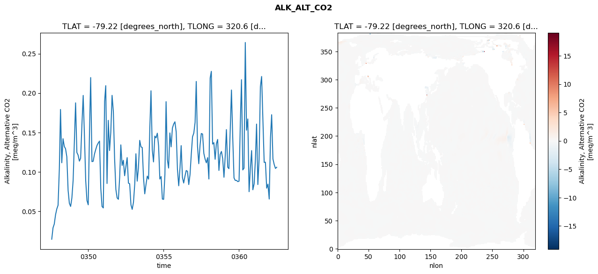
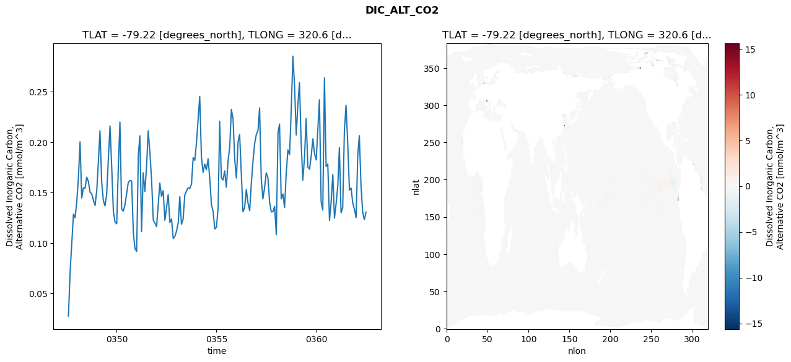
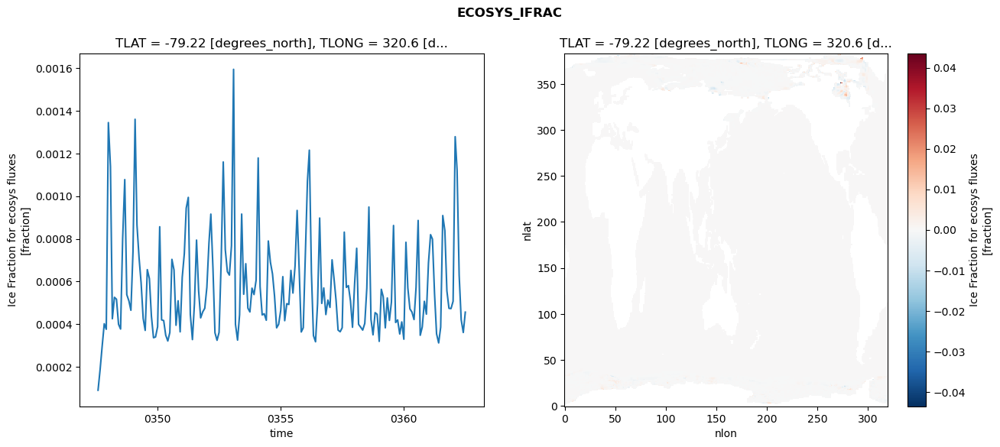
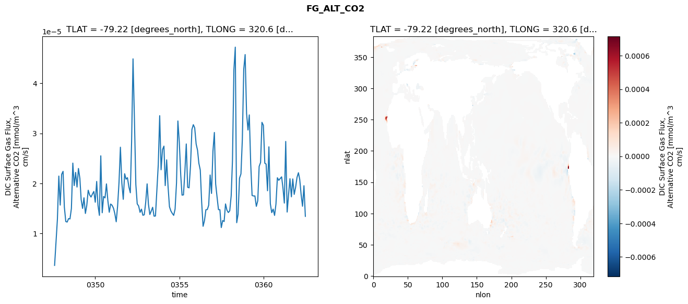

glb-dor_North_Atlantic_basin_011_1999-07-01_00046#
Simulation details#
Case: smyle.cdr-atlas-v0.glb-dor_North_Atlantic_basin_011_1999-07-01_00046.001
Basin: North_Atlantic_basin
Polygon: 11.0
Start date: 1999-07
Show code cell source Hide code cell source
import xarray as xr
import matplotlib.pyplot as plt
Show code cell source Hide code cell source
zarr_store = "/path/to/zarr/store"
# Parameters
zarr_store = "/global/cfs/projectdirs/m4746/Projects/Ocean-CDR-Atlas-v0/data/validation/smyle.cdr-atlas-v0.glb-dor_North_Atlantic_basin_011_1999-07-01_00046.001.validation.zarr"
Show code cell source Hide code cell source
%%time
ds_o = xr.open_zarr(zarr_store).compute()
ds_o
CPU times: user 650 ms, sys: 504 ms, total: 1.15 s
Wall time: 1.37 s
<xarray.Dataset> Size: 2MB
Dimensions: (nlat: 384, nlon: 320, time: 180)
Coordinates:
TLAT float64 8B -79.22
TLONG float64 8B 320.6
ULAT float64 8B -78.95
ULONG float64 8B 321.1
* time (time) object 1kB 0347-08-01 00:00:00 ... 0362-07-01 0...
z_t float32 4B 500.0
Dimensions without coordinates: nlat, nlon
Data variables:
ALK_ALT_CO2_diff (nlat, nlon) float32 492kB nan nan nan ... nan nan nan
ALK_ALT_CO2_rmse (time) float64 1kB 0.01448 0.02898 ... 0.1043 0.1058
DIC_ALT_CO2_diff (nlat, nlon) float32 492kB nan nan nan ... nan nan nan
DIC_ALT_CO2_rmse (time) float64 1kB 0.02775 0.07211 ... 0.1232 0.1307
ECOSYS_IFRAC_diff (nlat, nlon) float32 492kB nan nan nan ... nan nan nan
ECOSYS_IFRAC_rmse (time) float64 1kB 9.017e-05 0.0001886 ... 0.0004563
FG_ALT_CO2_diff (nlat, nlon) float32 492kB nan nan nan ... nan nan nan
FG_ALT_CO2_rmse (time) float64 1kB 3.632e-06 8.331e-06 ... 1.343e-05xarray.Dataset
- nlat: 384
- nlon: 320
- time: 180
- TLAT()float64-79.22
- long_name :
- array of t-grid latitudes
- units :
- degrees_north
array(-79.22052261)
- TLONG()float64320.6
- long_name :
- array of t-grid longitudes
- units :
- degrees_east
array(320.56250892)
- ULAT()float64-78.95
- long_name :
- array of u-grid latitudes
- units :
- degrees_north
array(-78.95289509)
- ULONG()float64321.1
- long_name :
- array of u-grid longitudes
- units :
- degrees_east
array(321.12500894)
- time(time)object0347-08-01 00:00:00 ... 0362-07-...
- bounds :
- time_bound
- long_name :
- time
array([cftime.DatetimeNoLeap(347, 8, 1, 0, 0, 0, 0, has_year_zero=True), cftime.DatetimeNoLeap(347, 9, 1, 0, 0, 0, 0, has_year_zero=True), cftime.DatetimeNoLeap(347, 10, 1, 0, 0, 0, 0, has_year_zero=True), cftime.DatetimeNoLeap(347, 11, 1, 0, 0, 0, 0, has_year_zero=True), cftime.DatetimeNoLeap(347, 12, 1, 0, 0, 0, 0, has_year_zero=True), cftime.DatetimeNoLeap(348, 1, 1, 0, 0, 0, 0, has_year_zero=True), cftime.DatetimeNoLeap(348, 2, 1, 0, 0, 0, 0, has_year_zero=True), cftime.DatetimeNoLeap(348, 3, 1, 0, 0, 0, 0, has_year_zero=True), cftime.DatetimeNoLeap(348, 4, 1, 0, 0, 0, 0, has_year_zero=True), cftime.DatetimeNoLeap(348, 5, 1, 0, 0, 0, 0, has_year_zero=True), cftime.DatetimeNoLeap(348, 6, 1, 0, 0, 0, 0, has_year_zero=True), cftime.DatetimeNoLeap(348, 7, 1, 0, 0, 0, 0, has_year_zero=True), cftime.DatetimeNoLeap(348, 8, 1, 0, 0, 0, 0, has_year_zero=True), cftime.DatetimeNoLeap(348, 9, 1, 0, 0, 0, 0, has_year_zero=True), cftime.DatetimeNoLeap(348, 10, 1, 0, 0, 0, 0, has_year_zero=True), cftime.DatetimeNoLeap(348, 11, 1, 0, 0, 0, 0, has_year_zero=True), cftime.DatetimeNoLeap(348, 12, 1, 0, 0, 0, 0, has_year_zero=True), cftime.DatetimeNoLeap(349, 1, 1, 0, 0, 0, 0, has_year_zero=True), cftime.DatetimeNoLeap(349, 2, 1, 0, 0, 0, 0, has_year_zero=True), cftime.DatetimeNoLeap(349, 3, 1, 0, 0, 0, 0, has_year_zero=True), cftime.DatetimeNoLeap(349, 4, 1, 0, 0, 0, 0, has_year_zero=True), cftime.DatetimeNoLeap(349, 5, 1, 0, 0, 0, 0, has_year_zero=True), cftime.DatetimeNoLeap(349, 6, 1, 0, 0, 0, 0, has_year_zero=True), cftime.DatetimeNoLeap(349, 7, 1, 0, 0, 0, 0, has_year_zero=True), cftime.DatetimeNoLeap(349, 8, 1, 0, 0, 0, 0, has_year_zero=True), cftime.DatetimeNoLeap(349, 9, 1, 0, 0, 0, 0, has_year_zero=True), cftime.DatetimeNoLeap(349, 10, 1, 0, 0, 0, 0, has_year_zero=True), cftime.DatetimeNoLeap(349, 11, 1, 0, 0, 0, 0, has_year_zero=True), cftime.DatetimeNoLeap(349, 12, 1, 0, 0, 0, 0, has_year_zero=True), cftime.DatetimeNoLeap(350, 1, 1, 0, 0, 0, 0, has_year_zero=True), cftime.DatetimeNoLeap(350, 2, 1, 0, 0, 0, 0, has_year_zero=True), cftime.DatetimeNoLeap(350, 3, 1, 0, 0, 0, 0, has_year_zero=True), cftime.DatetimeNoLeap(350, 4, 1, 0, 0, 0, 0, has_year_zero=True), cftime.DatetimeNoLeap(350, 5, 1, 0, 0, 0, 0, has_year_zero=True), cftime.DatetimeNoLeap(350, 6, 1, 0, 0, 0, 0, has_year_zero=True), cftime.DatetimeNoLeap(350, 7, 1, 0, 0, 0, 0, has_year_zero=True), cftime.DatetimeNoLeap(350, 8, 1, 0, 0, 0, 0, has_year_zero=True), cftime.DatetimeNoLeap(350, 9, 1, 0, 0, 0, 0, has_year_zero=True), cftime.DatetimeNoLeap(350, 10, 1, 0, 0, 0, 0, has_year_zero=True), cftime.DatetimeNoLeap(350, 11, 1, 0, 0, 0, 0, has_year_zero=True), cftime.DatetimeNoLeap(350, 12, 1, 0, 0, 0, 0, has_year_zero=True), cftime.DatetimeNoLeap(351, 1, 1, 0, 0, 0, 0, has_year_zero=True), cftime.DatetimeNoLeap(351, 2, 1, 0, 0, 0, 0, has_year_zero=True), cftime.DatetimeNoLeap(351, 3, 1, 0, 0, 0, 0, has_year_zero=True), cftime.DatetimeNoLeap(351, 4, 1, 0, 0, 0, 0, has_year_zero=True), cftime.DatetimeNoLeap(351, 5, 1, 0, 0, 0, 0, has_year_zero=True), cftime.DatetimeNoLeap(351, 6, 1, 0, 0, 0, 0, has_year_zero=True), cftime.DatetimeNoLeap(351, 7, 1, 0, 0, 0, 0, has_year_zero=True), cftime.DatetimeNoLeap(351, 8, 1, 0, 0, 0, 0, has_year_zero=True), cftime.DatetimeNoLeap(351, 9, 1, 0, 0, 0, 0, has_year_zero=True), cftime.DatetimeNoLeap(351, 10, 1, 0, 0, 0, 0, has_year_zero=True), cftime.DatetimeNoLeap(351, 11, 1, 0, 0, 0, 0, has_year_zero=True), cftime.DatetimeNoLeap(351, 12, 1, 0, 0, 0, 0, has_year_zero=True), cftime.DatetimeNoLeap(352, 1, 1, 0, 0, 0, 0, has_year_zero=True), cftime.DatetimeNoLeap(352, 2, 1, 0, 0, 0, 0, has_year_zero=True), cftime.DatetimeNoLeap(352, 3, 1, 0, 0, 0, 0, has_year_zero=True), cftime.DatetimeNoLeap(352, 4, 1, 0, 0, 0, 0, has_year_zero=True), cftime.DatetimeNoLeap(352, 5, 1, 0, 0, 0, 0, has_year_zero=True), cftime.DatetimeNoLeap(352, 6, 1, 0, 0, 0, 0, has_year_zero=True), cftime.DatetimeNoLeap(352, 7, 1, 0, 0, 0, 0, has_year_zero=True), cftime.DatetimeNoLeap(352, 8, 1, 0, 0, 0, 0, has_year_zero=True), cftime.DatetimeNoLeap(352, 9, 1, 0, 0, 0, 0, has_year_zero=True), cftime.DatetimeNoLeap(352, 10, 1, 0, 0, 0, 0, has_year_zero=True), cftime.DatetimeNoLeap(352, 11, 1, 0, 0, 0, 0, has_year_zero=True), cftime.DatetimeNoLeap(352, 12, 1, 0, 0, 0, 0, has_year_zero=True), cftime.DatetimeNoLeap(353, 1, 1, 0, 0, 0, 0, has_year_zero=True), cftime.DatetimeNoLeap(353, 2, 1, 0, 0, 0, 0, has_year_zero=True), cftime.DatetimeNoLeap(353, 3, 1, 0, 0, 0, 0, has_year_zero=True), cftime.DatetimeNoLeap(353, 4, 1, 0, 0, 0, 0, has_year_zero=True), cftime.DatetimeNoLeap(353, 5, 1, 0, 0, 0, 0, has_year_zero=True), cftime.DatetimeNoLeap(353, 6, 1, 0, 0, 0, 0, has_year_zero=True), cftime.DatetimeNoLeap(353, 7, 1, 0, 0, 0, 0, has_year_zero=True), cftime.DatetimeNoLeap(353, 8, 1, 0, 0, 0, 0, has_year_zero=True), cftime.DatetimeNoLeap(353, 9, 1, 0, 0, 0, 0, has_year_zero=True), cftime.DatetimeNoLeap(353, 10, 1, 0, 0, 0, 0, has_year_zero=True), cftime.DatetimeNoLeap(353, 11, 1, 0, 0, 0, 0, has_year_zero=True), cftime.DatetimeNoLeap(353, 12, 1, 0, 0, 0, 0, has_year_zero=True), cftime.DatetimeNoLeap(354, 1, 1, 0, 0, 0, 0, has_year_zero=True), cftime.DatetimeNoLeap(354, 2, 1, 0, 0, 0, 0, has_year_zero=True), cftime.DatetimeNoLeap(354, 3, 1, 0, 0, 0, 0, has_year_zero=True), cftime.DatetimeNoLeap(354, 4, 1, 0, 0, 0, 0, has_year_zero=True), cftime.DatetimeNoLeap(354, 5, 1, 0, 0, 0, 0, has_year_zero=True), cftime.DatetimeNoLeap(354, 6, 1, 0, 0, 0, 0, has_year_zero=True), cftime.DatetimeNoLeap(354, 7, 1, 0, 0, 0, 0, has_year_zero=True), cftime.DatetimeNoLeap(354, 8, 1, 0, 0, 0, 0, has_year_zero=True), cftime.DatetimeNoLeap(354, 9, 1, 0, 0, 0, 0, has_year_zero=True), cftime.DatetimeNoLeap(354, 10, 1, 0, 0, 0, 0, has_year_zero=True), cftime.DatetimeNoLeap(354, 11, 1, 0, 0, 0, 0, has_year_zero=True), cftime.DatetimeNoLeap(354, 12, 1, 0, 0, 0, 0, has_year_zero=True), cftime.DatetimeNoLeap(355, 1, 1, 0, 0, 0, 0, has_year_zero=True), cftime.DatetimeNoLeap(355, 2, 1, 0, 0, 0, 0, has_year_zero=True), cftime.DatetimeNoLeap(355, 3, 1, 0, 0, 0, 0, has_year_zero=True), cftime.DatetimeNoLeap(355, 4, 1, 0, 0, 0, 0, has_year_zero=True), cftime.DatetimeNoLeap(355, 5, 1, 0, 0, 0, 0, has_year_zero=True), cftime.DatetimeNoLeap(355, 6, 1, 0, 0, 0, 0, has_year_zero=True), cftime.DatetimeNoLeap(355, 7, 1, 0, 0, 0, 0, has_year_zero=True), cftime.DatetimeNoLeap(355, 8, 1, 0, 0, 0, 0, has_year_zero=True), cftime.DatetimeNoLeap(355, 9, 1, 0, 0, 0, 0, has_year_zero=True), cftime.DatetimeNoLeap(355, 10, 1, 0, 0, 0, 0, has_year_zero=True), cftime.DatetimeNoLeap(355, 11, 1, 0, 0, 0, 0, has_year_zero=True), cftime.DatetimeNoLeap(355, 12, 1, 0, 0, 0, 0, has_year_zero=True), cftime.DatetimeNoLeap(356, 1, 1, 0, 0, 0, 0, has_year_zero=True), cftime.DatetimeNoLeap(356, 2, 1, 0, 0, 0, 0, has_year_zero=True), cftime.DatetimeNoLeap(356, 3, 1, 0, 0, 0, 0, has_year_zero=True), cftime.DatetimeNoLeap(356, 4, 1, 0, 0, 0, 0, has_year_zero=True), cftime.DatetimeNoLeap(356, 5, 1, 0, 0, 0, 0, has_year_zero=True), cftime.DatetimeNoLeap(356, 6, 1, 0, 0, 0, 0, has_year_zero=True), cftime.DatetimeNoLeap(356, 7, 1, 0, 0, 0, 0, has_year_zero=True), cftime.DatetimeNoLeap(356, 8, 1, 0, 0, 0, 0, has_year_zero=True), cftime.DatetimeNoLeap(356, 9, 1, 0, 0, 0, 0, has_year_zero=True), cftime.DatetimeNoLeap(356, 10, 1, 0, 0, 0, 0, has_year_zero=True), cftime.DatetimeNoLeap(356, 11, 1, 0, 0, 0, 0, has_year_zero=True), cftime.DatetimeNoLeap(356, 12, 1, 0, 0, 0, 0, has_year_zero=True), cftime.DatetimeNoLeap(357, 1, 1, 0, 0, 0, 0, has_year_zero=True), cftime.DatetimeNoLeap(357, 2, 1, 0, 0, 0, 0, has_year_zero=True), cftime.DatetimeNoLeap(357, 3, 1, 0, 0, 0, 0, has_year_zero=True), cftime.DatetimeNoLeap(357, 4, 1, 0, 0, 0, 0, has_year_zero=True), cftime.DatetimeNoLeap(357, 5, 1, 0, 0, 0, 0, has_year_zero=True), cftime.DatetimeNoLeap(357, 6, 1, 0, 0, 0, 0, has_year_zero=True), cftime.DatetimeNoLeap(357, 7, 1, 0, 0, 0, 0, has_year_zero=True), cftime.DatetimeNoLeap(357, 8, 1, 0, 0, 0, 0, has_year_zero=True), cftime.DatetimeNoLeap(357, 9, 1, 0, 0, 0, 0, has_year_zero=True), cftime.DatetimeNoLeap(357, 10, 1, 0, 0, 0, 0, has_year_zero=True), cftime.DatetimeNoLeap(357, 11, 1, 0, 0, 0, 0, has_year_zero=True), cftime.DatetimeNoLeap(357, 12, 1, 0, 0, 0, 0, has_year_zero=True), cftime.DatetimeNoLeap(358, 1, 1, 0, 0, 0, 0, has_year_zero=True), cftime.DatetimeNoLeap(358, 2, 1, 0, 0, 0, 0, has_year_zero=True), cftime.DatetimeNoLeap(358, 3, 1, 0, 0, 0, 0, has_year_zero=True), cftime.DatetimeNoLeap(358, 4, 1, 0, 0, 0, 0, has_year_zero=True), cftime.DatetimeNoLeap(358, 5, 1, 0, 0, 0, 0, has_year_zero=True), cftime.DatetimeNoLeap(358, 6, 1, 0, 0, 0, 0, has_year_zero=True), cftime.DatetimeNoLeap(358, 7, 1, 0, 0, 0, 0, has_year_zero=True), cftime.DatetimeNoLeap(358, 8, 1, 0, 0, 0, 0, has_year_zero=True), cftime.DatetimeNoLeap(358, 9, 1, 0, 0, 0, 0, has_year_zero=True), cftime.DatetimeNoLeap(358, 10, 1, 0, 0, 0, 0, has_year_zero=True), cftime.DatetimeNoLeap(358, 11, 1, 0, 0, 0, 0, has_year_zero=True), cftime.DatetimeNoLeap(358, 12, 1, 0, 0, 0, 0, has_year_zero=True), cftime.DatetimeNoLeap(359, 1, 1, 0, 0, 0, 0, has_year_zero=True), cftime.DatetimeNoLeap(359, 2, 1, 0, 0, 0, 0, has_year_zero=True), cftime.DatetimeNoLeap(359, 3, 1, 0, 0, 0, 0, has_year_zero=True), cftime.DatetimeNoLeap(359, 4, 1, 0, 0, 0, 0, has_year_zero=True), cftime.DatetimeNoLeap(359, 5, 1, 0, 0, 0, 0, has_year_zero=True), cftime.DatetimeNoLeap(359, 6, 1, 0, 0, 0, 0, has_year_zero=True), cftime.DatetimeNoLeap(359, 7, 1, 0, 0, 0, 0, has_year_zero=True), cftime.DatetimeNoLeap(359, 8, 1, 0, 0, 0, 0, has_year_zero=True), cftime.DatetimeNoLeap(359, 9, 1, 0, 0, 0, 0, has_year_zero=True), cftime.DatetimeNoLeap(359, 10, 1, 0, 0, 0, 0, has_year_zero=True), cftime.DatetimeNoLeap(359, 11, 1, 0, 0, 0, 0, has_year_zero=True), cftime.DatetimeNoLeap(359, 12, 1, 0, 0, 0, 0, has_year_zero=True), cftime.DatetimeNoLeap(360, 1, 1, 0, 0, 0, 0, has_year_zero=True), cftime.DatetimeNoLeap(360, 2, 1, 0, 0, 0, 0, has_year_zero=True), cftime.DatetimeNoLeap(360, 3, 1, 0, 0, 0, 0, has_year_zero=True), cftime.DatetimeNoLeap(360, 4, 1, 0, 0, 0, 0, has_year_zero=True), cftime.DatetimeNoLeap(360, 5, 1, 0, 0, 0, 0, has_year_zero=True), cftime.DatetimeNoLeap(360, 6, 1, 0, 0, 0, 0, has_year_zero=True), cftime.DatetimeNoLeap(360, 7, 1, 0, 0, 0, 0, has_year_zero=True), cftime.DatetimeNoLeap(360, 8, 1, 0, 0, 0, 0, has_year_zero=True), cftime.DatetimeNoLeap(360, 9, 1, 0, 0, 0, 0, has_year_zero=True), cftime.DatetimeNoLeap(360, 10, 1, 0, 0, 0, 0, has_year_zero=True), cftime.DatetimeNoLeap(360, 11, 1, 0, 0, 0, 0, has_year_zero=True), cftime.DatetimeNoLeap(360, 12, 1, 0, 0, 0, 0, has_year_zero=True), cftime.DatetimeNoLeap(361, 1, 1, 0, 0, 0, 0, has_year_zero=True), cftime.DatetimeNoLeap(361, 2, 1, 0, 0, 0, 0, has_year_zero=True), cftime.DatetimeNoLeap(361, 3, 1, 0, 0, 0, 0, has_year_zero=True), cftime.DatetimeNoLeap(361, 4, 1, 0, 0, 0, 0, has_year_zero=True), cftime.DatetimeNoLeap(361, 5, 1, 0, 0, 0, 0, has_year_zero=True), cftime.DatetimeNoLeap(361, 6, 1, 0, 0, 0, 0, has_year_zero=True), cftime.DatetimeNoLeap(361, 7, 1, 0, 0, 0, 0, has_year_zero=True), cftime.DatetimeNoLeap(361, 8, 1, 0, 0, 0, 0, has_year_zero=True), cftime.DatetimeNoLeap(361, 9, 1, 0, 0, 0, 0, has_year_zero=True), cftime.DatetimeNoLeap(361, 10, 1, 0, 0, 0, 0, has_year_zero=True), cftime.DatetimeNoLeap(361, 11, 1, 0, 0, 0, 0, has_year_zero=True), cftime.DatetimeNoLeap(361, 12, 1, 0, 0, 0, 0, has_year_zero=True), cftime.DatetimeNoLeap(362, 1, 1, 0, 0, 0, 0, has_year_zero=True), cftime.DatetimeNoLeap(362, 2, 1, 0, 0, 0, 0, has_year_zero=True), cftime.DatetimeNoLeap(362, 3, 1, 0, 0, 0, 0, has_year_zero=True), cftime.DatetimeNoLeap(362, 4, 1, 0, 0, 0, 0, has_year_zero=True), cftime.DatetimeNoLeap(362, 5, 1, 0, 0, 0, 0, has_year_zero=True), cftime.DatetimeNoLeap(362, 6, 1, 0, 0, 0, 0, has_year_zero=True), cftime.DatetimeNoLeap(362, 7, 1, 0, 0, 0, 0, has_year_zero=True)], dtype=object) - z_t()float32500.0
- long_name :
- depth from surface to midpoint of layer
- positive :
- down
- units :
- centimeters
- valid_max :
- 537500.0
- valid_min :
- 500.0
array(500., dtype=float32)
- ALK_ALT_CO2_diff(nlat, nlon)float32nan nan nan nan ... nan nan nan nan
- cell_methods :
- time: mean
- grid_loc :
- 3111
- long_name :
- Alkalinity, Alternative CO2
- units :
- meq/m^3
array([[ nan, nan, nan, ..., nan, nan, nan], [ nan, nan, nan, ..., nan, nan, nan], [0.01416016, 0.00537109, 0.01464844, ..., nan, nan, nan], ..., [ nan, nan, nan, ..., nan, nan, nan], [ nan, nan, nan, ..., nan, nan, nan], [ nan, nan, nan, ..., nan, nan, nan]], dtype=float32) - ALK_ALT_CO2_rmse(time)float640.01448 0.02898 ... 0.1043 0.1058
- cell_methods :
- time: mean
- grid_loc :
- 3111
- long_name :
- Alkalinity, Alternative CO2
- units :
- meq/m^3
array([0.01448266, 0.02898191, 0.03371967, 0.04544469, 0.05281022, 0.05759108, 0.10410177, 0.17912924, 0.11149728, 0.14202418, 0.13218074, 0.12928708, 0.11907394, 0.07644499, 0.06016192, 0.05607234, 0.06670123, 0.0894716 , 0.14181595, 0.18753374, 0.12455088, 0.12120287, 0.11358364, 0.11718574, 0.1593367 , 0.19695499, 0.14635098, 0.08884677, 0.06364145, 0.05815099, 0.15147641, 0.21961448, 0.1129268 , 0.11339595, 0.12249453, 0.12822404, 0.13352511, 0.13665632, 0.13896805, 0.07899569, 0.05601842, 0.05420709, 0.18954711, 0.20931679, 0.08519641, 0.16532765, 0.12700065, 0.15023465, 0.19704107, 0.17646092, 0.11704373, 0.07770523, 0.06692499, 0.06513521, 0.09332539, 0.13420986, 0.10813136, 0.11463841, 0.09504563, 0.10616069, 0.11805885, 0.08564628, 0.08482729, 0.05811623, 0.05235443, 0.06127674, 0.08470884, 0.1229383 , 0.08813462, 0.10500089, 0.13994183, 0.13171773, 0.13085917, 0.09251726, 0.07208497, 0.08421828, 0.09456552, 0.09071602, 0.15615586, 0.20283696, 0.1280566 , 0.11258625, 0.14531898, 0.14308117, 0.14900754, 0.13277848, 0.0908504 , 0.09402592, 0.06546026, 0.06506059, 0.09669254, 0.18904063, 0.11574656, 0.10479557, 0.14935022, 0.13172469, 0.15554138, 0.16067701, 0.16347524, 0.15052179, 0.1031973 , 0.08228619, 0.10525474, 0.13325738, 0.09277879, 0.08581404, 0.09446382, 0.10162616, 0.10065841, 0.08384557, 0.09616856, 0.12250505, 0.14447089, 0.14917441, 0.16273647, 0.21469354, 0.13224833, 0.11029539, 0.13374936, 0.14863544, 0.14795836, 0.12340204, 0.11617224, 0.11141877, 0.11797909, 0.09089923, 0.21908123, 0.22752608, 0.13518216, 0.13704821, 0.11594352, 0.13562453, 0.14108422, 0.10176675, 0.12219521, 0.12586931, 0.11676743, 0.09310289, 0.12054851, 0.1535767 , 0.10598009, 0.10400388, 0.15248108, 0.20381449, 0.14406049, 0.09226338, 0.08909854, 0.08914435, 0.08759012, 0.08811818, 0.16255772, 0.21690393, 0.10243983, 0.10458906, 0.26413452, 0.15284003, 0.16706372, 0.07479918, 0.10404879, 0.1269651 , 0.07722699, 0.08477248, 0.11572043, 0.16060068, 0.08386997, 0.11593934, 0.20791662, 0.22098648, 0.1664531 , 0.11191832, 0.11223735, 0.07924868, 0.08437836, 0.06547362, 0.14359786, 0.17245394, 0.1163642 , 0.10937248, 0.10432991, 0.10580197]) - DIC_ALT_CO2_diff(nlat, nlon)float32nan nan nan nan ... nan nan nan nan
- cell_methods :
- time: mean
- grid_loc :
- 3111
- long_name :
- Dissolved Inorganic Carbon, Alternative CO2
- units :
- mmol/m^3
array([[ nan, nan, nan, ..., nan, nan, nan], [ nan, nan, nan, ..., nan, nan, nan], [0.00830078, 0.00390625, 0.00512695, ..., nan, nan, nan], ..., [ nan, nan, nan, ..., nan, nan, nan], [ nan, nan, nan, ..., nan, nan, nan], [ nan, nan, nan, ..., nan, nan, nan]], dtype=float32) - DIC_ALT_CO2_rmse(time)float640.02775 0.07211 ... 0.1232 0.1307
- cell_methods :
- time: mean
- grid_loc :
- 3111
- long_name :
- Dissolved Inorganic Carbon, Alternative CO2
- units :
- mmol/m^3
array([0.02775316, 0.07211133, 0.09992563, 0.12879176, 0.12524286, 0.14163755, 0.16597481, 0.20033087, 0.14471826, 0.15466774, 0.15434445, 0.16533815, 0.1612448 , 0.15043152, 0.14865939, 0.14235311, 0.13726877, 0.15206516, 0.18200504, 0.21129563, 0.16072468, 0.14235148, 0.13691452, 0.14834233, 0.18347461, 0.21620221, 0.1760483 , 0.1314874 , 0.12088855, 0.11915788, 0.17810677, 0.22004828, 0.13379611, 0.13169847, 0.13775284, 0.148789 , 0.16021794, 0.16204536, 0.16151374, 0.11086664, 0.09452267, 0.09178554, 0.18741143, 0.20630398, 0.11156129, 0.16964246, 0.1512794 , 0.17602783, 0.21130379, 0.18932564, 0.16285526, 0.1228556 , 0.11994995, 0.11631044, 0.13925669, 0.15955264, 0.14623427, 0.15191571, 0.12261984, 0.13450781, 0.14800679, 0.12036468, 0.12394927, 0.10450701, 0.10666061, 0.11195401, 0.1204017 , 0.14607236, 0.1186234 , 0.12379824, 0.14779363, 0.1514849 , 0.15488782, 0.15417584, 0.15839651, 0.18471023, 0.18198463, 0.19996933, 0.22356634, 0.2453307 , 0.1855364 , 0.17015329, 0.17823901, 0.1726424 , 0.18351803, 0.16368492, 0.13846516, 0.13124518, 0.11400679, 0.11572948, 0.13539876, 0.22080929, 0.16466258, 0.16258641, 0.17152983, 0.15541565, 0.18146838, 0.19517267, 0.23246891, 0.22284006, 0.18310151, 0.16447102, 0.20083103, 0.20763883, 0.16819233, 0.13107173, 0.13524752, 0.15312268, 0.13976621, 0.13218317, 0.15932904, 0.18158566, 0.19878208, 0.20789321, 0.21174833, 0.23394433, 0.16348093, 0.14380458, 0.15506112, 0.16964044, 0.16452403, 0.14029564, 0.13090792, 0.13129695, 0.13635873, 0.10828498, 0.20946315, 0.21790496, 0.14378217, 0.14874893, 0.13525236, 0.16878173, 0.19230248, 0.18777998, 0.23225961, 0.28527504, 0.25542548, 0.20709381, 0.23862312, 0.25921044, 0.19903561, 0.16232743, 0.18526614, 0.22348454, 0.17537257, 0.17327247, 0.18595711, 0.20343461, 0.18872767, 0.18243037, 0.21422275, 0.24207451, 0.14095929, 0.13273173, 0.26371973, 0.17578497, 0.17834346, 0.12251938, 0.14076936, 0.16799204, 0.12470431, 0.13946319, 0.15777512, 0.1946075 , 0.13008449, 0.13516436, 0.21222757, 0.23652444, 0.19876843, 0.15257971, 0.15455336, 0.13963402, 0.13360545, 0.12534103, 0.18787461, 0.20653527, 0.15657818, 0.13081054, 0.12323233, 0.13074399]) - ECOSYS_IFRAC_diff(nlat, nlon)float32nan nan nan nan ... nan nan nan nan
- cell_methods :
- time: mean
- grid_loc :
- 2110
- long_name :
- Ice Fraction for ecosys fluxes
- units :
- fraction
array([[ nan, nan, nan, ..., nan, nan, nan], [ nan, nan, nan, ..., nan, nan, nan], [ 2.3245811e-06, -3.7252903e-05, 1.1622906e-05, ..., nan, nan, nan], ..., [ nan, nan, nan, ..., nan, nan, nan], [ nan, nan, nan, ..., nan, nan, nan], [ nan, nan, nan, ..., nan, nan, nan]], dtype=float32) - ECOSYS_IFRAC_rmse(time)float649.017e-05 0.0001886 ... 0.0004563
- cell_methods :
- time: mean
- grid_loc :
- 2110
- long_name :
- Ice Fraction for ecosys fluxes
- units :
- fraction
array([9.01721763e-05, 1.88624315e-04, 2.96486717e-04, 4.01974048e-04, 3.75910601e-04, 1.34471928e-03, 1.13856930e-03, 4.25292508e-04, 5.25763896e-04, 5.16779760e-04, 3.99192135e-04, 3.77026768e-04, 8.02401955e-04, 1.07751014e-03, 5.38193861e-04, 5.09464049e-04, 4.65073677e-04, 7.39479506e-04, 1.36023663e-03, 8.64676870e-04, 7.11170162e-04, 5.94846193e-04, 4.26592325e-04, 3.70733179e-04, 6.55459856e-04, 6.13582816e-04, 4.37296243e-04, 3.36309561e-04, 3.39797515e-04, 3.87847439e-04, 8.56495799e-04, 4.20065861e-04, 4.16785699e-04, 3.48324885e-04, 3.21020640e-04, 3.60749839e-04, 7.03587792e-04, 6.53963665e-04, 3.94750658e-04, 5.09401578e-04, 3.63935785e-04, 6.19753518e-04, 7.31120688e-04, 9.43646041e-04, 9.94126911e-04, 4.45036186e-04, 3.27705202e-04, 4.96367026e-04, 7.93913837e-04, 5.55695403e-04, 4.29274324e-04, 4.57602706e-04, 4.74232389e-04, 5.72636549e-04, 7.79504739e-04, 9.15730380e-04, 6.64385622e-04, 3.59778484e-04, 3.24284962e-04, 3.61165742e-04, 6.91747886e-04, 1.15999885e-03, 7.49524987e-04, 6.45889156e-04, 6.30009765e-04, 7.67742266e-04, 1.59435546e-03, 3.99537302e-04, 3.25151736e-04, 4.43980980e-04, 9.15962744e-04, 5.40130653e-04, 6.83262325e-04, 4.75145223e-04, 4.57196409e-04, 5.68698635e-04, 5.38618349e-04, 6.05991193e-04, 1.17894856e-03, 5.76414356e-04, ... 3.83084407e-04, 7.21605664e-04, 1.07030068e-03, 1.21545624e-03, 6.40799493e-04, 3.46364173e-04, 3.17322687e-04, 4.96315558e-04, 8.97264355e-04, 4.97240645e-04, 5.69650808e-04, 4.45008432e-04, 5.12965812e-04, 4.78601880e-04, 7.01444593e-04, 6.16238466e-04, 5.11945128e-04, 3.72118769e-04, 3.64325786e-04, 3.83061440e-04, 8.31190147e-04, 5.72152121e-04, 5.80557339e-04, 5.08482772e-04, 3.85336861e-04, 5.88289916e-04, 7.55599241e-04, 3.98995400e-04, 3.85842276e-04, 3.72081834e-04, 4.03618746e-04, 5.68397505e-04, 9.48914079e-04, 4.21995840e-04, 3.50011705e-04, 4.53773176e-04, 4.46236768e-04, 3.19335663e-04, 5.63296054e-04, 5.28941565e-04, 3.82795621e-04, 5.22508145e-04, 4.17516580e-04, 5.03636538e-04, 8.62387147e-04, 4.07761742e-04, 4.19774637e-04, 3.53880080e-04, 4.10381513e-04, 3.29450232e-04, 7.83688248e-04, 5.69713439e-04, 4.71441609e-04, 4.56646160e-04, 4.21684948e-04, 5.72250696e-04, 8.86066145e-04, 3.47902078e-04, 3.86607135e-04, 5.06990963e-04, 4.46847267e-04, 6.87059319e-04, 8.19495939e-04, 7.98561510e-04, 5.42520517e-04, 3.54517880e-04, 3.11923165e-04, 3.86087633e-04, 9.08987551e-04, 8.38241266e-04, 5.55882729e-04, 4.74155135e-04, 4.72891483e-04, 5.07116954e-04, 1.27860291e-03, 1.12223766e-03, 6.29056904e-04, 4.21004948e-04, 3.60887808e-04, 4.56261404e-04]) - FG_ALT_CO2_diff(nlat, nlon)float32nan nan nan nan ... nan nan nan nan
- cell_methods :
- time: mean
- grid_loc :
- 2110
- long_name :
- DIC Surface Gas Flux, Alternative CO2
- units :
- mmol/m^3 cm/s
array([[ nan, nan, nan, ..., nan, nan, nan], [ nan, nan, nan, ..., nan, nan, nan], [6.9466637e-09, 2.6924226e-08, 2.5952581e-08, ..., nan, nan, nan], ..., [ nan, nan, nan, ..., nan, nan, nan], [ nan, nan, nan, ..., nan, nan, nan], [ nan, nan, nan, ..., nan, nan, nan]], dtype=float32) - FG_ALT_CO2_rmse(time)float643.632e-06 8.331e-06 ... 1.343e-05
- cell_methods :
- time: mean
- grid_loc :
- 2110
- long_name :
- DIC Surface Gas Flux, Alternative CO2
- units :
- mmol/m^3 cm/s
array([3.63233590e-06, 8.33107046e-06, 1.28205121e-05, 2.14724573e-05, 1.56745691e-05, 2.18122069e-05, 2.24148969e-05, 1.52895181e-05, 1.23897270e-05, 1.22879121e-05, 1.29824549e-05, 1.29033453e-05, 1.49987034e-05, 2.40589535e-05, 1.95749583e-05, 2.21985283e-05, 1.92792749e-05, 2.29866608e-05, 2.09996261e-05, 1.67611848e-05, 1.50132792e-05, 1.71350242e-05, 1.40069271e-05, 1.56115015e-05, 1.86478053e-05, 1.77026375e-05, 1.72834936e-05, 1.78887523e-05, 1.83976722e-05, 1.62534955e-05, 2.03966831e-05, 1.56557739e-05, 1.36241572e-05, 2.55090252e-05, 1.41453912e-05, 1.73932763e-05, 1.71191721e-05, 1.99039014e-05, 1.66122200e-05, 1.42435016e-05, 1.58848999e-05, 1.56385815e-05, 1.50460383e-05, 1.40064112e-05, 1.23503655e-05, 1.54623074e-05, 2.02385415e-05, 2.72305261e-05, 2.00854092e-05, 1.68273780e-05, 2.19368224e-05, 2.08522943e-05, 2.11442692e-05, 1.92937676e-05, 1.81343521e-05, 2.83559144e-05, 4.48757443e-05, 3.29431411e-05, 1.97893563e-05, 1.59198415e-05, 1.54956621e-05, 1.42244456e-05, 1.48639896e-05, 1.36416379e-05, 1.37400106e-05, 1.61894830e-05, 1.99117804e-05, 1.58919639e-05, 1.37954448e-05, 1.44799009e-05, 1.52394016e-05, 1.34670854e-05, 1.35002653e-05, 1.86377384e-05, 2.37470867e-05, 3.35275700e-05, 2.27301800e-05, 2.67567939e-05, 2.74499934e-05, 1.95693256e-05, ... 3.11011466e-05, 2.78843222e-05, 2.66105839e-05, 2.40450123e-05, 2.26700528e-05, 1.62696000e-05, 1.14461781e-05, 1.25570637e-05, 1.47477750e-05, 1.47888218e-05, 1.56543390e-05, 2.16827739e-05, 1.80034429e-05, 2.64502788e-05, 3.01754907e-05, 1.98901794e-05, 1.72289032e-05, 1.47709810e-05, 1.47520524e-05, 1.11898066e-05, 1.25927974e-05, 1.23933111e-05, 1.59053546e-05, 1.46467529e-05, 1.41896469e-05, 1.45425113e-05, 1.75457353e-05, 2.45805273e-05, 4.27152853e-05, 4.72140487e-05, 1.21623217e-05, 1.38638334e-05, 2.10438339e-05, 2.19085906e-05, 2.87179977e-05, 4.28182856e-05, 4.57306325e-05, 3.39893529e-05, 3.06670372e-05, 3.36819600e-05, 2.38863637e-05, 1.75961107e-05, 1.74960448e-05, 1.74955458e-05, 1.54267362e-05, 1.65336007e-05, 2.34013468e-05, 2.41824327e-05, 3.21997191e-05, 3.16019669e-05, 2.40405963e-05, 2.38742145e-05, 1.85357390e-05, 2.73128321e-05, 1.59545973e-05, 1.41650157e-05, 1.48710049e-05, 1.36132664e-05, 1.58850960e-05, 2.11343678e-05, 2.06299698e-05, 2.09759871e-05, 2.13141400e-05, 1.91769061e-05, 1.60787554e-05, 2.83827364e-05, 1.42847363e-05, 1.76406183e-05, 2.09372813e-05, 1.73283374e-05, 2.08970041e-05, 1.78164735e-05, 1.91836389e-05, 2.11956364e-05, 2.21398561e-05, 2.08085174e-05, 1.77279993e-05, 1.54437303e-05, 1.95436389e-05, 1.34285828e-05])
- timePandasIndex
PandasIndex(CFTimeIndex([0347-08-01 00:00:00, 0347-09-01 00:00:00, 0347-10-01 00:00:00, 0347-11-01 00:00:00, 0347-12-01 00:00:00, 0348-01-01 00:00:00, 0348-02-01 00:00:00, 0348-03-01 00:00:00, 0348-04-01 00:00:00, 0348-05-01 00:00:00, ... 0361-10-01 00:00:00, 0361-11-01 00:00:00, 0361-12-01 00:00:00, 0362-01-01 00:00:00, 0362-02-01 00:00:00, 0362-03-01 00:00:00, 0362-04-01 00:00:00, 0362-05-01 00:00:00, 0362-06-01 00:00:00, 0362-07-01 00:00:00], dtype='object', length=180, calendar='noleap', freq='MS'))
Show code cell source Hide code cell source
variables = [v[:-5] for v in ds_o.variables if "_rmse" in v]
Show code cell source Hide code cell source
plt.rcParams.update({'figure.max_open_warning': 0})
for v in variables:
fig, axs = plt.subplots(1, 2, figsize=(15, 6))
ds_o[f"{v}_rmse"].plot(ax=axs[0])
ds_o[f"{v}_diff"].plot(ax=axs[1])
plt.suptitle(v, fontweight="bold")



